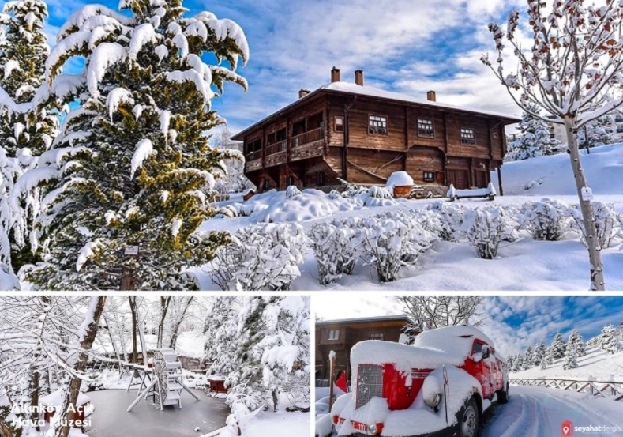

Altınköy Açık Hava Müzesi
Altınköy Açık Hava Müzesi 500 dönümlük bir alan üzerine kurulmuş ve içerisinde doğada yürüyüş yapabileceğiniz bir yer ve yemek molası vermek içinde restoranlar sizleri bekliyor. Bununla beraber köy havasını katması için bulunan köy kahvesinde bir çay içebilirsiniz. Köyde bir camide bulunmaktadır ve ibadet yapmak isteyenler için kapıları açıktır. Araba ile gelmek isteyenler içinde otopark hizmeti mevcuttur.
Altınköy Açık Hava Müzesi Giriş Ücreti
Altınköy giriş ücreti yetişkinler için 7 TL, öğrenciler için 2 TL ve 6 yaş altına ile 65 yaş üstüne ise giriş ücretsiz. İçeriye dışarıdan yiyecek ve içecek getirmek yasak. Aynı zamanda evcil hayvanlarıda içeriye almıyorlar.
Çalışma saatleri ise sabah 10:00 ile akşam 20:00 arasında ziyaretçilere açık. Pazartesi günleri ise ziyarete kapalı.
Altınköy Açık Hava Müzesinde Neler Var?
 Altınköy Açık Hava Müzesi içerisinde piknik yapabileceğiniz bir alan, kahvaltı edebileceğiniz restoranlar bulunmaktadır. Aynı zamanda içerisindeki işletme ve tamamen doğal ve köy havasını yansıtan kültürü ile konuklarını büyüleyen bu müze Ankara’nın resmi, kalabalık ve stresli yaşamından insanların uzaklaşarak doğanın içerisinde insanlara stres atma imkânı sunuyor.
Altınköy Açık Hava Müzesi, Altındağ Belediye’si tarafından müze haline getirilmiş ve 1950’lerden günümüze gelen bir köy mimarisi ve köy havasını yansıtmaktadır. 500 dönümlük bir arazi üzerinde yer alan köy müzesinde; köy kahvesi, muhtarlık, ahırlar, keçiler, koyunlar, minyatür heykeller, değirmen ve köy bakkalı gibi birbirinden farklı sevimli dostlarımızı görebilirsiniz.
Altınköy’de at binmek de burada yapabileceğiniz en güzel aktivitelerden birisi. Burada çocukların binebilmesi için midilli atlar yer alıyor. At binme için 25 TL ücret alınıyor. Yaklaşık bir halı saha boyutunda alanda 3 tur attırıyorlar. Tabi rakamlar değişebilir.
Altınköy, kahvaltı içinde tercih edebileceğiniz bir yer. İçerisinde kahvaltı yapabileceğiniz farklı mekanlar mevcut. Ortalama serpme kahvaltı 60 TL civarında bir fiyatı var. Gözeleme 15 TL ve çay ise 3,5 TL. Fiyatlar değişkenlik gösterebilir. Köy evi konsepti ile hazırlanmış mekanlarda hoş bir kahvaltı yapabilirsiniz. Hafta sonları kalabalık olduğu için gitmeden önce rezervasyon yapabilirsiniz.
Altınköy Açık Hava Müzesi Nerede? Nasıl Gidilir?
Ankara Altındağ ilçesinin Beşikkaya mahallesinde yer alan bu açık hava müzesine özel arabanız ile ya da toplu taşıma ile rahatlıkla ulaşabilirsiniz. Toplu taşıma ile Ulus meydandan kalkmakta olan Altındağ otobüslerine binebilirsiniz.